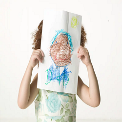

© 2022. Orgulhosamente criado Grupo PI 072 Univesp -SP
Bem vindoa JogosEducativos.
A utilização de jogos educativos como atividade lúdica permite o desenvolvimento do raciocínio e o aprendizado de crianças e jovens, possibilitando a interação dos alunos entre si e com o professor, através desta tática esses profissionais podem aprimorar sua própria prática pedagógica.

Benefícios dos Jogos para Crianças de 4 a 5 Anos
1. O aumento do foco e da concentração é um dos principais benefícios dos jogos. Além de entreter, eles têm o poder de desenvolver a memória e a atenção dos jovens, o que contribui significativamente para o aumento de rendimento na escola. Bom, não é mesmo?
Benefícios dos Jogos para Crianças de 4 a 5 Anos
2.Por meio dos jogos, as crianças descobrem formas diferenciadas de se expressar. Elas têm a oportunidade de reconhecer sentimentos e emoções e, ainda, controlá-los de modo construtivo e consciente.

Benefícios dos Jogos para Crianças de 4 a 5 Anos
3.Toda criança necessita de regras, por isso os jogos são essenciais para que elas entendam a importância disso no dia a dia. Assim, passatempos com normas preestabelecidas e que visam um objetivo, além de divertidos, desenvolvem não só os limites, mas também o senso de cooperação e competição.